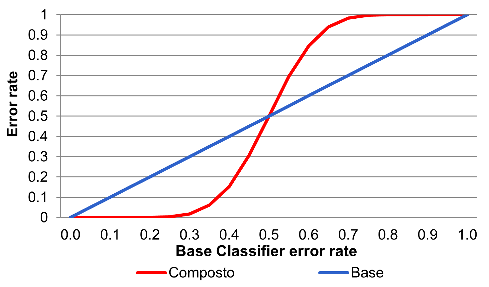

Machine Learning and Data Mining (Module 2)
Multi classifier
Matteo Francia
DISI — University of Bologna
m.francia@unibo.it
Basics
Construct multiple base classifiers and predict the class to which a record belongs by aggregating the classifications obtained
- The result of the compound classifier is defined by means of a function that, for example, assigns the record to the class that was “voted” by the largest number of classifiers

Bayes Theorem: an example
Suppose we have 25 simple classifiers.
- Each classifier has an error-rate of \(\epsilon\) = 0.35
- Assume that the classifiers are independent
There is no correlation between the error-rates of the classifiers
The probability that the compound classifier gives an incorrect result is:
\(\sum_{i=13}^25 = \binom{25}{i} \epsilon^i(1-\epsilon)^(25-i)=0.06\)
Necessary conditions for the compound classifier to give better results than the simple classifiers are:
- That the classifiers are independent
- That the error-rate of the single classifier is less than 0.5

How to build a composite classifier
Changing the training set: building more training sets from the given data set
By changing the attributes used: individual classifiers are based on a subset of the attributes
- Useful when attributes are highly redundant Random Forest
Changing the classes considered:
- One partitions the classes into two groups A0 and A1 and transforms the given problem into a binary problem. The classes that belong to A0 are classified as 0 the remaining ones as 1.
- The different classifiers are constructed by resubdividing the classes into different subsets
- The classification of the composite classifier is obtained by increasing the score of the classes that belong to the chosen subset by 1.
- The record is finally assigned to the class that obtains the highest score
- Error-Correcting Output Coding: translates a multi-class classification problem into a binary classification one
Changing the parameters of the learning algorithm:
- Topology and weights of a neural network
- Decision trees with random choice policies of the attributes to be used
Error Decomposition: Bias, Variance & Noise
A formal model for analyzing the error made by a classifier
- Probability of a classifier making a mistake in its prediction
The error committed by a classifier depends on:
- BIAS : ability of the chosen classifier in modeling events and extending the prediction to events not in the training set
- Different types of classifiers have different capabilities in defining decision boundary between classes
- For example, different decision trees may have different capabilities
- VARIANCE : capability of the training set in representing the actual data set
- Different training sets may result in different decision boundary
- NOISE : non-determinism of the classes to be determined
- Set instances with the same attribute values may result in different classes
Error Decomposition: Bias, Variance & Noise
Different types of classifiers have inherently different capabilities in modeling the edges of regions
- 100 training sets each containing 100 examples obtained from a predefined region partition (dashed line)
- The black line represents the average true line of separation obtained from the 100 classifiers
The difference between the true separation line and the average separation line represents the classifier bias
- The bias of the 1-NN is lower
- However, k-NNs are more sensitive to the composition of the training set and therefore will exhibit greater variance

DT (left) vs 1-nn (right)
Multi classifier
Different classifiers (e.g., Decision trees + k-nearest neighbor) are used to reduce error bias
- Classifiers must be independent: no (or little) correlation between errors made between two classifiers
- Different classifiers can operate on distinct subsets of attributes on which they have ideal performance
Class membership is decided by a voting mechanism
- Class voted on by the largest number of classifiers
- Voting can be weighted according to the confidence of the classifier in case the classifier provides it
- Ex. C1 classifier votes for class X. In training C1 made 25 out of 100 errors for class X. Classifier C2 votes for class Y. In training phase C2 committed 10 out of 100 errors for class Y.
- The record is assigned to class Y
Bagging
Allows the construction of compound classifiers that associate an event with the highest rated class from the base classifiers
Each classifier is constructed by bootstrapping the same training set
- In statistics: any test or metric that uses random sampling with replacement
// k = number of boostrap cycles N = training set cardinality
// \sigma()=1 if the argument is TRUE, 0 otherwise
for i=1 to k do
Create a training set Di such that |Di|=N
Train a classifier Ci using Di
end for
\(C^*(\boldsymbol{x})=argmax_y \sum_i \sigma(C_i(\boldsymbol{x})=y)\)
Bagging improves generalization error by reducing the variance component
- Thus, bagging will be particularly useful for those types of classifiers that are sensitive to changes in the training set
Bagging: an example
Basic classifier: one-level binary decision tree
- Can only make choices of the type \(x \le s \rightarrow -1\), if \(x>s \rightarrow 1\), where \(s\) is the split point
The data set
| y |
1 |
1 |
1 |
-1 |
-1 |
-1 |
-1 |
1 |
1 |
1 |
Accuracy of the basic classifier cannot exceed 70%
- $x $, $ x>0.3$
- \(x \le 0.7 \rightarrow -1\), \(x>0.7 \rightarrow 1\)
Bagging cycles

Bagging cycles
Bagging result
Bagging determines the behavior of a two-level decision tree

- Exercise: Draw the two-level decision tree corresponding to the result of bagging
Random Forest
It is a bagging method
- Random sampling with replacement of the training set \(D_i\)
- Train of the classifier \(C_i\) on the training set \(D_i\)
- Combine classifiers through majority voting
Random forest base classifiers are Decision Trees
- For each node in the decision tree, the split attribute is chosen on a random subset of \(d'\) features rather than on the entire set of d features (pattern dimensionality). Typical value of \(d' =\sqrt{d}\)
- In the absence of this expedient (known as feature bagging) many trees would choose with high probability the same (most discriminating) features
Random forest performs two types of bagging: that on the training set and one on the feature set
Boosting
An iterative approach to progressively adjust the composition of the training set in order to focus on incorrectly classified records
- Initially, all \(N\) records have the same weight (\(1/N\))
- Unlike bagging, the weights can change at the end of the boosting round in order to increase the probability of the record being selected in the training set
- The probability of records that are difficult to classify i.e., that were classified incorrectly in the previous boosting round are increased
The final result is obtained by combining the predictions made by the different classifiers
Boosting techniques differ based on how:
- the weights of the training set records are updated
- the predictions of the classifiers are combined
AdaBoost
Let \(C_1, C_2 ,..., C_T\) be the basic \(T\) classifiers each used at a boost cycle \(j \in [1, T]\), and \(\epsilon_j\) be the error rate:
\(\epsilon_j=\frac{1}{N}\sum_{i=1}^Nw_i\sigma(C_j(\boldsymbol{x}_i)\nw y_i)\)
- \((x_i,y_i)\), \(i=1, ..., N\) records of the training set
- \(w_i\) is the weight of the \(i\)-th element of the training set
- \(\sigma()=1\) if the argument is TRUE, 0 otherwise
The relevance of a classifier is defined as: \(\alpha_j=\frac{1}{2}ln(\frac{1-\epsilon_j}{\epsilon_j})\)
- \(\alpha_j\) takes positive values when the error rate is close to 0
- \(\alpha_j\) takes negative values when the error rate is close to 1

AdaBoost
The weight updating rule for record \(i\) at boosting cycle \(j\) is
\(w_i^{(j+1)}\frac{w_i^j}{Z_j}\begin{cases}e^{-\alpha_j} if C_i(x_i)=y_i\\ e^{\alpha_j} else \end{cases}\)
\(Z_j\) is a normalization factor to ensure that \(\sum_i w_i^{j+1}=1\)
The weight of correctly classified records is reduced, that of weights classified incorrectly increases
If a boost cycle produces a classifier with error rate greater than 50%, the weights are reported 1/n
The record is assigned to the class that maximizes the weighted sum: \(C^*(x)=argmax_y \sum_{j=1}^T \alpha_j sign (C_i(x)=y)\)

AdaBoost
w={wi=1/N i=1..N}
for j=1 to T do // boost cycle number
Build a training set Dj by sampling with replacement based on w
Train a classifier Cj on Dj
Apply Cj to D
j=1/N iwi(Cj(xi)yi) // compute the weighted error
if j > 0.5 then
w={wi=1/N|i=1,2,…,N}; // reset!
else
j=1/2 ln((1-j)/j);
Update the weight w;
end if;
end for;
$C^*(x)=argmax_y \sum_{j=1}^T \alpha_j sign (C_i(x)=y)$ // sign return 1/-1 if the classification is correct/wrong
AdaBoost: an example
Basic classifier: one-level binary decision tree
- Can only make choices of the type \(x \le s \rightarrow -1\), if \(x>s \rightarrow 1\), where \(s\) is the split point
The data set
| y |
1 |
1 |
1 |
-1 |
-1 |
-1 |
-1 |
1 |
1 |
1 |
Accuracy of the basic classifier cannot exceed 70%
- $x $, $ x>0.3$
- \(x \le 0.7 \rightarrow -1\), \(x>0.7 \rightarrow 1\)
AdaBoost: cycles

AdaBoost: cycles

Boosting round 1
- Split point: 0.75
- \(\epsilon_1\)=0.03
- $_1 $=1.738
Boosting round 2
- Split point: 0.05
- \(\epsilon_2\)=0.004
- $_2 $=2.7784
Boosting round 3
- Split point: 0.30
- \(\epsilon_3\)=0.00027
- $_3 $=4.1195
AdaBoost: an example
The dataset
| y |
1 |
1 |
1 |
-1 |
-1 |
-1 |
-1 |
1 |
1 |
1 |
The result

- 5.16 = -1.738 + 2.7784 + 4.1195
- The classifier does not make errors adopting a behvior compatible with a two-level decision tree
- \(\alpha_1=1.738\)
- \(\alpha_2=2.7784\)
- \(\alpha_3=4.1195\)